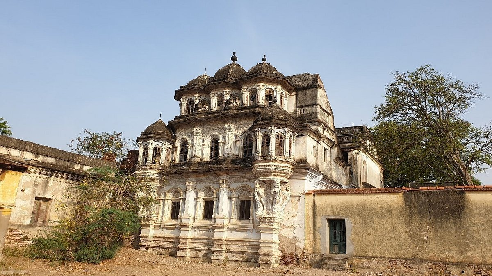

VILATHIKULAM
Ettyapuram Place

The Ettayapuram Palace, also known as Ettappan's Palace, is a significant historical site. Built by the local rulers, the palace showcases colonial architectural influences and offers a glimpse into the region's royal past. While the structure has deteriorated over time, it remains a popular tourist attraction